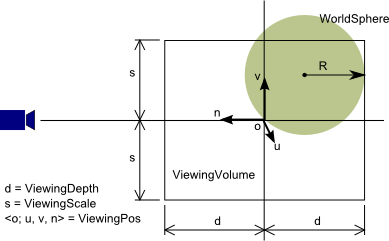
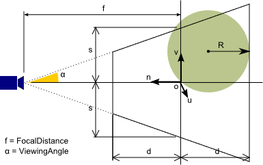

Hisui.Graphics.IView インターフェイスの Camera プロパティから、カメラ情報を取得することが出来ます。
namespace Hisui.Graphics
{
public interface IView
{
ICamera Camera { get; }
}
}
この ICamera インターフェイスから一部抜粋したものを以下に示します。
namespace Hisui.Graphics
{
public interface ICamera
{
bool Perspective { get; set; }
double ViewingAngle { get; set; }
Geom.CodSys3d ViewingPos { get; set; }
double ViewingScale { get; set; }
double FocalDistance { get; }
Geom.Size2i ScreenSize { get; }
double ViewingDepth { get; }
Geom.Size2d ViewingSize { get; }
Geom.Box3d ViewingVolume { get; }
Geom.Sphere3d WorldSphere { get; }
...
}
}
この中にビューポート変換や投影変換に必要な情報がすべて入っています。
次の3つの座標系の関係を理解する必要があります。
ワールド座標系は、幾何モデルが描画される座標系です。 ヒスイではこの座標系をグローバルな座標系と考えます。
カメラ座標系は、カメラ（視点）に固定された座標系です。幾つか注意すべきポイントがあります。
Hisui.Geom.CodSys3d ICamera.ViewingPos { get; set; }
最終的にビューに映し出されたピクセル座標系です。Windowsと同様に左上を原点とします。
ICamera には WorldSphere というプロパティがあります。 これはワールド座標系に定義されているモデルの境界球を表しています。 ヒスイのカメラは、この境界球が視体積に含まれるように視体積の深さ（d = ViewingDepth）を決定します。
Perspective プロパティが false の場合、直交投影となります。

上の図は、カメラ座標系とスクリーン座標系の関係を表しています。 右上のオレンジ色の矩形がカメラ座標系であり、左下の緑の矩形がスクリーン座標系です。
s = ViewingScale は uv 面における視体積の大きさを決めるパラメータであり、ビューの拡大/縮小に関係するパラメータです。 また、(ws, hs) はスクリーンの大きさです。 (w, h) はスクリーンのアスペクト比を保ちつつ s = max(w, h) を満たすように決定されます。
上の図は、直交投影の視体積を横から見た図です。 視体積の深さ d = ViewingDepth は、モデルの境界球 WorldSphere が収まるように決定されます。

直交投影の視体積は上図のようになり、OpenGL に渡される投影変換は次のようになります。
glOrtho( -w, w, -h, h, -d, d );
Perspective プロパティが true の場合には透視投影となり、視体積は下図のような錐台になります。
焦点距離 f = FocalDistance と視野角 α = ViewingAngle の間には次の関係が成り立ちます。
tan α = s / f
ここで分数の分子は s であり、tanα = h / f ではないことに注意してください。 gluPerspective() などに渡す fovy とは異なるので注意が必要です。
OpenGL に渡される投影変換は次のようになります。
double w' = w * ((f - d) / f); double h' = h * ((f - d) / f); glFrustum( -w', w', -h', h', f - d, f + d);
Copyright © 2006, 株式会社カタッチ
http://www.quatouch.com